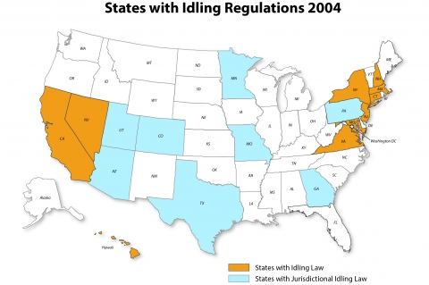
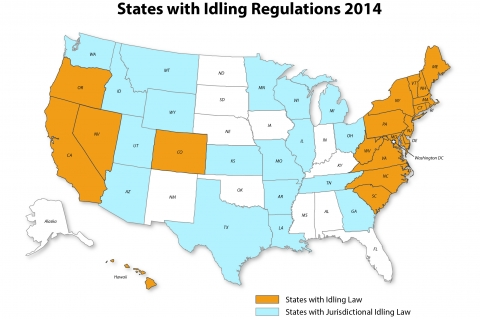

The National Idling Reduction Network brings together trucking and transit companies; railroads; ports; equipment manufacturers; Federal, state, and local government agencies (including regulators); nonprofit organizations; and national research laboratories to identify consistent, workable solutions to heavy-vehicle idling for the entire United States. Below is the August 2014 issue of the National Idling Reduction Network News; the archives are available on the Archives page and the latest issue is on the main NIRNN page.
Subscribe to the Newsletter
To receive NIRNN by e-mail monthly, please e-mail Patricia Weikersheimer. If you have news you believe would be of interest to newsletter readers, please send it to idlingreduction@anl.gov
August 2014 National Idling Reduction Network News: From the Editor
In another reminder that the National Idling Reduction Network News is celebrating its 10th year of publication, we thought you might want to see how far we’ve come in terms of idling reduction laws. By the way, many of these laws started as noise ordinances.
Thanks to Mike Tunnell of the American Transportation Research Institute, who provided historical data, we designed a map that shows which states and jurisdictions had idling reduction laws in place in 2004.

In contrast, an updated map shows how far we’ve come. There are now laws in 20 states and the District of Columbia, compared to 10 states and the District back in 2004. Likewise, there are now jurisdictional laws in 18 states compared to 8 in 2004.

It's easy to draw the conclusion that idling is definitely not the way to go. Please let us know what you think of this progress.
Terry M. Levinson, Editor
Energetics Incorporated
tlevinson@energetics.com
Patricia Weikersheimer, Writer
Argonne National Laboratory
pweikersheimer@anl.gov
Solicitations for Funding and Awards
Program (with link to website) — Organization — Funding Amount — Due Date (Information new since last month in boldface.)
Deadline in Chronological Order
-
DieselWise Indiana — Indiana Department of Environmental Management — September 30, 2014 — $2.5 million.
-
Clean Diesel School Bus Fund Retrofit Grants Program — Ohio EPA — Up to $300,000 — October 15, 2014.
-
Advanced Transportation Technologies Project — New York State Energy Research and Development Authority (NYSERDA) — $3.5 million — October 23, 2014.
-
Clean Fuel Advanced Technology (CFAT) Project — The North Carolina Clean Energy Technology Center at N.C. State University — $1.3 million — November 3, 2014
-
North Carolina Diesel Emission Reduction Grant Program — North Carolina Department of Environment and Natural Resources — ~$250,000 — November 7, 2014.
First Come, First Served
-
Carl Moyer Memorial Air Quality Standards Attainment Program — Bay Area Air Quality Management District (BAAQMD) — Unknown.
-
Clean Air Fleets (GPS and retrofit technologies to support idle reduction in the Denver Metro area and Colorado Front Range) — Colorado Regional Air Quality Council — ~$1 million.
-
New York State Electric Vehicle Voucher Incentive Fund (NYSEV-VIF) — New York State Energy Research and Development Authority (NYSERDA) — $9 million.
-
Small Business Pollution Prevention Assistance Account Loan Program — Pennsylvania Department of Environmental Protection — $2 million annually.
Rolling Deadline Until Funds are Awarded
-
Business Assistance Program, Environmental Loans for Small Businesses — Arkansas Department of Environmental Quality — Indeterminate.
-
On-Road Heavy-Duty Vehicle Loan Program — California Air Resources Board (CARB) — ~$48 million for loan guarantees.
-
Illinois Clean Diesel Grant Program (school buses only) — Illinois EPA — $1 million annually through 2016.
-
Driver Recognition Program: Diesel Idle Reduction Campaign — Metropolitan Washington Council of Governments (COG), in collaboration with the District Department of the Environment, the District Department of Transportation, and the Maryland Department of the Environment — Not applicable — Rolling deadline: the 15th of every month.
-
Small Business APU (auxiliary power unit) Loan Program — Minnesota Pollution Control Agency (MPCA) — $110,000.
Regulatory News
Maryland’s APU Exemption Increases on October 1
On October 1, Maryland’s APU exemption for heavy-duty trucks increases from 400 lb to 550 lb. To read the law, please see Maryland Senate Bill 72.
Awards and Recognition
Awardee — Source of Award
Thirty-six awards for idling reduction equipment — Wisconsin State Energy Office
Reports and Other Resources of Interest
-
7 Cars That Save on Gas in a Way You Won’t Believe (Money)
-
AAA’s Tests Reveal Real-World Benefits of Automatic Stop-Start Technology (AAA)
-
Fact Sheet: Second Integrated Urban Air Toxics Report to Congress (U.S. EPA)
-
Implementing Idling-Reduction Solutions To Save Money, Meet Regulations (Fleet Equipment)
-
Summary of Transportation Forecast: Medium and Heavy Duty Vehicles: Medium and Heavy Duty Hybrid Electric, Plug-In Hybrid Electric, Battery Electric, Natural Gas, Propane Autogas, Fuel Cell, and Conventional Vehicles—Global Market Forecasts, 2014–2035 (Navigant Research)
Upcoming Meetings and Events
Name of meeting [with Link to Website] Date (Location) (Information new since last month in boldface.)
-
Sustainable Freight Strategy Workshops September 11, 15, 16, 23, and 24, 2014 (California—multiple locations)
-
High-Efficiency Truck Users Forum (HTUF) National Conference September 22–24, 2014 (Argonne, Illinois)
-
9th Annual Southeast Diesel Collaborative Partners Meeting September 23–24, 2014 (Atlanta, Georgia)
-
Growing Sustainable Cities 7th Annual Conference October 7–8, 2014 (Dubuque, Iowa)
-
SAE 2014 Commercial Vehicle Engineering Congress October 7–9, 2014 (Rosemont, Illinois)
-
North American Green Fleet Forum & Green Fleet Expo October 15–16, 2014 (Sacramento, California)
-
Southeast Alternative Fuels Conference & Expo October 22–24, 2014 (Raleigh, North Carolina)
-
Green Fleet Conference and Expo October 29–30, 2014 (Schaumburg, Illinois)
-
Transportation Research Board (TRB) 94th Annual Meeting January 11–15, 2015 (Washington, D.C.)
-
Society of Automotive Engineers (SAE) Government/Industry Meeting (in conjunction with the Washington, D.C., Auto Show) January 21–23, 2015 (Washington, D.C.)
-
Green Truck Summit March 3-4, 2015 (Indianapolis, Indiana)
-
Mid-America Trucking Show March 26–28, 2015 (Louisville, Kentucky)
-
Alternative Clean Transportation (ACT) Expo May 4–7, 2015 (Dallas, Texas)
-
CARB Course 520: How To Comply with CARB Diesel Regulations (Multiple dates and locations)
-
CARB Course 521: How To Comply with the Truck and Bus Regulation (Multiple dates and locations)
Manufacturers' News
BAE and Cummins: Stop/Start Technology for Transit Buses
BAE and Cummins have collaborated to integrate stop/start technology in transit buses. According to BAE, the stop/start technology reduces idling time by up to 40%. Accessories such as air conditioning remain operational during engine shut-off mode.
BAE’s stop/start technology is available on 40-foot transit buses produced by New Flyer, Gillig, and Nova Bus that are equipped with Cummins ISB6.7 hybrid engines and HybriDrive Series-E systems. For more information, please go to BAE’s website.
Mitsubishi: Idle Limit System for Work Trucks
Mitsubishi Fuso Truck of America (MFTA) has developed an Idle Limit System (ILS) option for use with any of its 2012–15 model-year FUSO Canter work trucks. The option enables automatic engine shutdown after 3, 5, or 10 minutes of idling.
According to Todd Bloom, MFTA’s president and CEO, “More and more jurisdictions are enacting idle-limiting legislation. . . . At the same time, many fleets may be interested in ILS to help them reduce fuel consumption and contain fuel costs.” More information is available at vehicleservicepros.com.
Ports
Long Beach Incentivizes Shore Power
The Port of Long Beach (POLB) has approved a cargo-ship incentive with a shore-power component. POLB’s new Vessel Dockage Waiver Program waives dockage fees for vessels that slow down within 40 nautical miles of the Port and use shore power, or a certified alternative, at berth. Compliant cargo ships essentially receive “free parking.”
According to POLB, while the Port will forgo $3.3–$4.9 million a year in dockage fees, the incentive program is expected to bring additional cargo to the Port. For more information, please see the POLB press release.
Railroads
Electrifying Amtrak in Rensselaer
Amtrak is retrofitting its Rensselaer, New York, maintenance-and-repair facility to enable standby electrification for locomotives. Seven locomotives have already been retrofitted to operate on electrical standby power. By the end of this month, 18 locomotives are expected to have been retrofitted. (Standby power is required for locomotive repair-and-maintenance activities.)
The electrification initiative has roots in air-quality concerns identified by the Concerned Citizens of Rensselaer and the Sierra Club’s Hudson-Mohawk Group. According to timesunion.com, the two groups conducted air-quality tests near the Amtrak facility in 2011 and 2012. The results, which revealed high levels of black carbon, were sent to the EPA.
The Hudson-Mohawk Group is funding the $90,000 retrofit project as part of a larger grant it received to implement projects to improve air quality. More information is available at timesunion.com.
Additional Idle Reduction Resources
Visit the Vehicle Technologies Office's Idle Reduction webpage to view additional idle reduction resources, including Currently Available Idling Reduction Equipment, Status of the Weight Exemption for Idling Reduction Devices, Summary of State and Municipal Idling Regulations, Incentives and Funding Opportunities for Idling Reduction Projects, Tools Available to Calculate the Cost of Idling Equipment, Locations of Electrified Parking Spaces, Idling Reduction Outreach Assistance, and back issues of the Idling Reduction Network News.